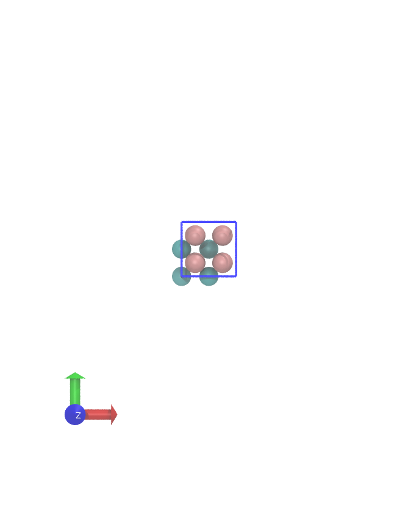
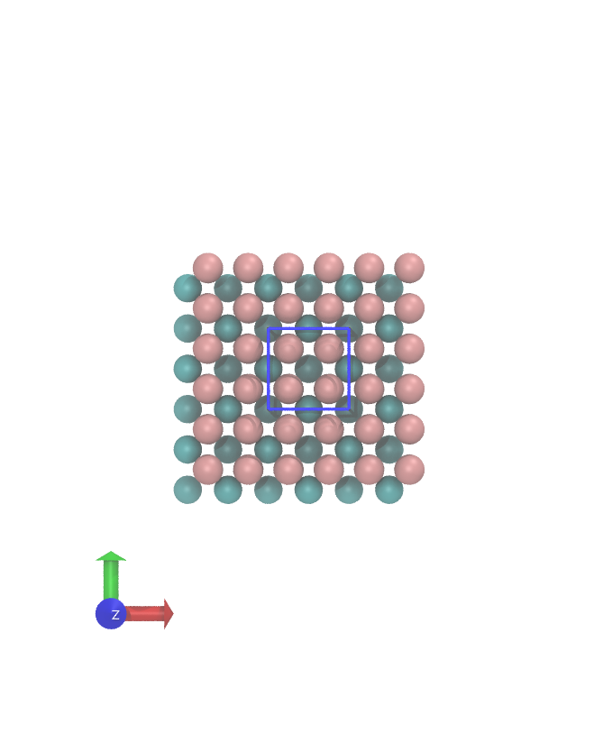
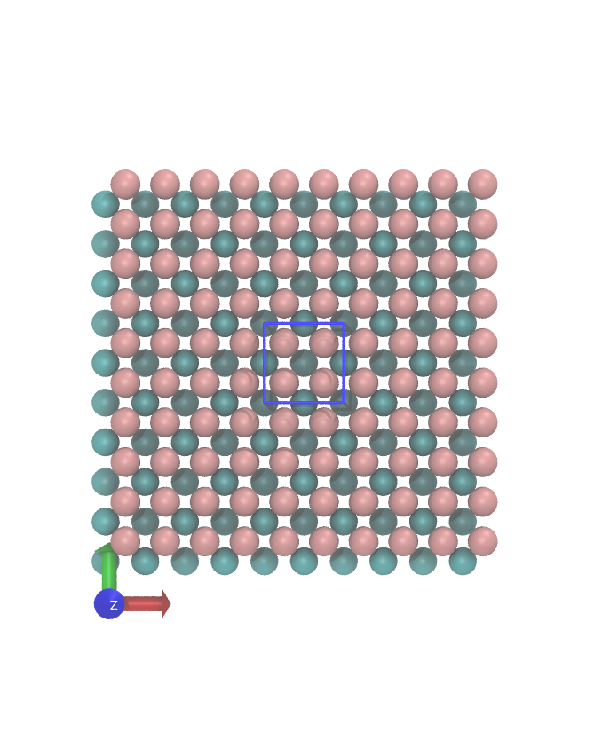
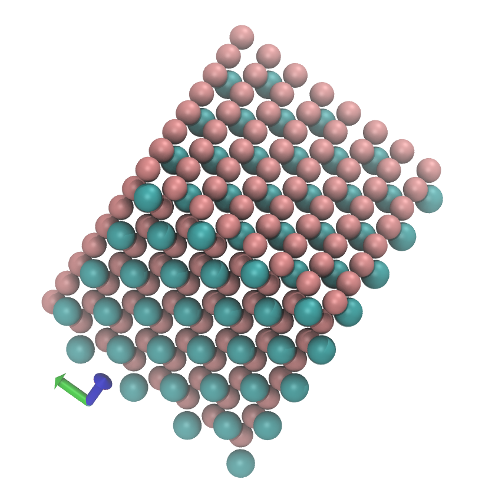

Seeing surfaces: how scanning probe microscopes work.¶
 |
 |
Scanning probes¶
 |
Atomic force microscopy (left) and Scanning Tunnelling microscopy (right) |
 |
- Local measurements.
- Invasive?
- Ambient or liquid conditions?
What is a surface?¶
What is a surface?¶
What is a surface?¶
What is a surface?¶
What is a surface?¶
What is a surface?¶

What is a surface?¶

What is a surface?¶

Energy of a surface depends on:
- the number of bonds cut
- is there a dipole moment
Science bit¶
How do SPMs get such high resolution imaging?
The trick is a highly non-linear signal
- STM the signal drops off exponentially (why?)
- AFM in attractive regime the signal drops off with large power of distance ($r^{-3}$ to $r^{-6}$)
- AFM in repulsive regime the signal drops off exponentially (why?)
AFM¶
Model the cantilever oscilations: $$ \ddot{z} + \omega_{0}^{2} \alpha \dot{z} + \omega_0^2 z - \frac{\omega_0^2}{k}F(z) = \frac{\omega_0^2}{k}F_{ext} $$
work in constant amplitude and frequency change $$ \ddot{z} + \omega_0^2 z - \frac{\omega_0^2}{k}F(z) = 0 $$
motion is periodic, we can find a solution of the form $$ \frac{\omega}{\omega_0}^2 = \frac{1}{\pi k A_1} \int_0^{2 \pi} F(z) cos (\tau) d\tau $$
Hofer, Werner A., Adam S. Foster, and Alexander L. Shluger. "Theories of scanning probe microscopes at the atomic scale." Reviews of Modern Physics 75.4 (2003): 1287.
Macro vs Nano¶
|
|
|
cantilever is macroscopic, tip apex is nanoscopic
experiment measures frequency change due to all interactions - macro + nano
Experiment: Macroscopic effects¶
removed empirically by subtracting force from averaged long range scan data over several surface locations

|
K Miyazawa, N Kobayashi, MW, AL Shluger, K Amano, T Fukuma, Nanoscale 8, 7334 (2016)
STM¶
$$ I(z) \propto \exp^{-k \sqrt{2 \phi}z} $$ where, $k$ is a constant, $\phi$ is the work function of the surface and $z$ is the distance from the surface.
Using Landau-Buttiker formalism + a lot of simplifications, we can approximate the current through a tip as
$$
I(z,E) \propto \text{LDOS}(z, E)
$$
where $\text{LDOS}$ is a local density of states - the amplitude of electron states of the surface that have an energy within $dE$ of $E$ at the location $z$.
Again this gives exponential decay.
 |
2 sided strategy:manipulate both experiment and simulation data for comparison K Miyazawa, N Kobayashi, MW, AL Shluger, K Amano, T Fukuma, Nanoscale 8, 7334 (2016) |
Modelling SPMs¶
Need a forcefield for classical calculations - bonds, angles, torsions, charges etc for all atoms
Or use Quantum Mechanical calculations (Density Functional Theory (~1000x slower) than forcefield)
For STM we need the electron density (LDOS), we need Quantum Mechanics
For AFM we need the to calculate the force on a tip model on a 3D grid (1000s of calculations)
Hofer, Werner A., Adam S. Foster, and Alexander L. Shluger. "Theories of scanning probe microscopes at the atomic scale." Reviews of Modern Physics 75.4 (2003): 1287.
Modelling SPMs¶
Need a forcefield for classical calculations - bonds, angles, torsions, charges etc for all atoms
Using classical potentials to 'pull' molecules onto a KCl surface.
Gaberle, J., Gao, D. Z., Watkins, M. B., & Shluger, A. L. (2016). Calculating the entropy loss on adsorption of organic molecules at insulating surfaces. The Journal of Physical Chemistry C, 120(7), 3913-3921.
DFT¶
Why DFT?
- Explicit inclusion of electronic structure
- predictable accuracy (at least when benchmarked for related systems)
- many observables available (spectroscopy)
- cheaper (better scaling) than many wavefunction based approaches
- ab initio molecular dynamics / Monte Carlo
Hohenberg-Kohn Theorems¶
Theorem 1
- the potential and hence the total energy are a unique functional of the electronic density, $n(\mathbf{r})$
- $n(\mathbf{r}) \leftrightarrow V_{ext}(\mathbf{r},\mathbf{R})$
Theorem 2
- the total energy is variational
- $E[n] \geq E[n_{GS}]$
Kohn-Sham: non-interacting electrons¶
We map the problem of interacting electrons onto an equivalent one with non-interacting electrons with an altered external potential (xc).
We expand the electron density, $n$, as a sum of one electron orbital contributions
the energy has several components:
$E_{tot}[n] = E_{kin}[n] + E_{ext}[n] + E_{H}[n] + E_{XC}[n]$
- $E_{kin}$ - kinetic energy of electrons
- $E_{ext}$ - energy due to external potential (pseudo potentials, external bias or electric fields ... )
- $E_{H}$ - Hartree energy, classical electrostatic interactions
- $E_{xc}$ - non-classical Coulomb energy: electron correlation
Electronic density
$$ n(\mathbf{r}) = \sum_i f_i \mid \psi_i (\mathbf{r}) \mid ^2 $$where $f_i$ is the occupation number of the $i$th orbital
Kinetic energy of non-interacting electrons
$$ T_s[n] = \sum_i f_i \big{<} \psi_i (\mathbf{r}) \mid -\frac{1}{2} \nabla^2 \mid \psi_i (\mathbf{r}) \big{>} $$Electronic interaction with the external potential
$$ E_{ext} [n] = \int_r n(\mathbf{r}) V_{ext} (\mathbf{r}) \text{d}\mathbf{r}, V_{ext} = \sum_I -\frac{Z_I}{\mid \mathbf{r} - \mathbf{R}_I \mid} $$with the exact solution as a Slater determinant of the lowest $N$ orbitals
$$ \Psi = \frac{1}{\sqrt{N!}} \text{det} [\psi_1 \psi_2 \psi_3 \cdots \psi_N] $$KS energy functional¶
We correct the non-interacting electron model by adding in an (in principle unknown) XC potential that accounts for all quantum mechanical many-body interactions (electron-electron repulsion)
Classical election-electron repulsion
$$ J[n] = \frac{1}{2} \int_r \int_{r'} \frac{n(\mathbf{r})n(\mathbf{r'})}{\mid \mathbf{r} - \mathbf{r'}} = \frac{1}{2} \int_r n(\mathbf{r}) V_H(\mathbf{r}) \text{d} \mathbf{r} $$Kohn-Sham functional
$$ E_{KS}[n] = T_s[n] + E_{ext}[n] + J[n] + E_{XC}[n] $$$$ E_{XC}[n] = E_{kin}[n] - T_s[n] + E_{ee}[n] - J[n] $$The exact functional form for the electron-electron repulsion is not known, but various levels of approximation are available (Jacob's Ladder). The existence of this functional is guarenteed by the 1st Hohenberg-Kohn Theroem.
This maps mathematically onto the familiar Hartree-Fock model of electronic structure.
Using the 2nd Hohenberg-Kohn theorem, we find the electron density that minimises the energy of the system. But, like in Hartree-Fock theory, we have to ensure that the electron orbitals are orthonormal to prevent the system imploding.
Orthogonality constraint
$$ \Omega_{KS} [\psi_i] = E_{KS}[n] - \sum_{ij} \epsilon_{ij} \int \psi_i^*(\mathbf{r})\psi_j(\mathbf{r})\text{d} \mathbf{r} $$Variational search in the space of the orbitals
By finding the minimum (extremum) of the $\Omega$ functional $\partial \frac{\Omega_{KS} [\psi_i]}{\partial \psi_i}$ we get the KS equations
$$ H_{KS} \psi_i = \big{[} -\frac{1}{2} \nabla^2 + V_{KS} \big{]} \psi_i = \sum_{ij} \epsilon_{ij} \psi_j $$where $V_{KS}$ is given by
$$ V_{KS}(\mathbf{r}) = V_{ext}(\mathbf{r}) + V_{H}(\mathbf{r}) + V_{XC}(\mathbf{r}) $$and, again, all the magic is in $V_{XC}$. The Lagrangian multipliers, $\epsilon_{ij}$ ensure that the orbitals stay orthonormal.
KS equations¶
$$ H_{KS} \psi_i = \big{[} -\frac{1}{2} \nabla^2 + V_{KS} \big{]} \psi_i = \sum_{ij} \epsilon_{ij} \psi_j $$We can transform the generalised eigenvalue problem given by the KS equations above, to get rid of the nasty sum on the right hand side. In this case $\epsilon_{ij}$ is diagonal, and we get an eigenvalue problem:
$$\big{[} -\frac{1}{2} \nabla^2 + V_{KS} \big{]} \psi_i = \epsilon_i \psi_i$$- KS equations look like the Schr$\ddot{o}$dinger equations
- coupled and highly non-linear ($V_{KS}$ depends on the orbitals!)
- self consistent solution (Self Consistent Field - the $V_{KS}$ is consistent with the orbitals)
- KS scheme is, in principle, exact (if we knew the exact $E_{XC}$)
Self-consistency¶
generate an initial guess, from a superposition of atomic densities (typical PW code) or atomic block diagonal density matrix (CP2K)
- generate a starting density $\Rightarrow n^{init}$
- generate the KS potential $\Rightarrow V_{KS}^{init}$
- solve the KS equations $\Rightarrow \epsilon, \psi$
then repeat until convergence
- calculate the new density $\Rightarrow n^{1}$
- calculate the new KS potential $\Rightarrow V_{KS}^{1}$
- new orbitals and energies $\Rightarrow \epsilon^1, \psi^1$
calculate properties from final density and orbitals
Stopping criteria in CP2K are either that the largest derivative of the in energy wrt a MO coefficient ($\frac{\delta E(C)}{\delta C}$) is smaller than EPS_SCF (OT), or the largest change in the density matrix ($P$) is smaller than EPS_SCF (traditional diagonalization).
Basis Set Representation(s)¶
to actually do calculations we need to expand the KS equations into a basis. In CP2K we use Gaussian functions, as the primary basis set:
the KS orbitals are then represented as
$$ \psi_i (\mathbf{r}) = \sum_{\alpha} C_{\alpha i} \phi_{\alpha} (\mathbf{r}) $$the density as
$$ n (\mathbf{r}) = \sum_i \sum_{\alpha \beta} f_i C_{\alpha i} C_{\beta i} \phi_{\alpha} (\mathbf{r})\phi_{\beta} (\mathbf{r}) = P_{\alpha \beta} \phi_{\alpha} (\mathbf{r})\phi_{\beta} (\mathbf{r}) $$where the density matrix $\mathbf{P}$ is defined.
There is a complication - the basis functions are not orthogonal. We have an overlap matrix, $\mathbf{S}$,
$$ S_{\alpha \beta} = \int_r \phi_{\alpha} (\mathbf{r})\phi_{\beta} (\mathbf{r}) \text{d}\mathbf{r} $$KS total energy
$$ E[\{\psi_i\};\{\mathbf{R}_I\}] = T[\{\psi_i\}] + E_{ext}[n] + E_H [n] + E_{XC}[n] + E_{II} $$for local of semi-local functionals or
$$ E[\{\psi_i\};\{\mathbf{R}_I\}] = T[\{\psi_i\}] + E_{ext}[n] + E_H [n] + E_{XC}[\{\psi_i\}] + E_{II} $$for hybrid functionals.
Where $E[\{\psi_i\};\{\mathbf{R}_I\}]$ indicates that the energy depends on the (occupied) KS orbitals (which then give a density) and parametrically on all the $I$ nuclear coordinates, $\mathbf{R}_I$.
Matrix formulation of the KS equations
using the variational principle we get
$$ \mathbf{K}(C)\mathbf{C} = \mathbf{SC}\epsilon $$ $$ \mathbf{K}(C) = \mathbf{T} + \mathbf{V}_{ext} + \mathbf{V}_H(C) + \mathbf{V}_{XC}(C) $$Algorithmic challenges¶
- construct the Kohn-Sham matrix
- Hartree potential
- XC potential
- HF/exact exchange
- core/pseudopotential terms
- fast and efficient minimization of the energy functional
- efficient calculation of the density matrix and construction of the Molecular Orbitals ($\mathbf{C}$)
Construction of the KS matrix should be (and is in CP2K) linear scaling (O(N)) in basis set size. Using dual basis set (GPW) techniques - coming up.
We help to develop the CP2K code. Some usage examples here.
Conclusions¶
Many microscopes, much data, lots of ways of operating
Very successful collaborations between theory, computational and experimental groups to unravel the physics of systems.
Thanks to¶
- EPSRC and ARCHER (national super computer) for funding
- Alex Shluger, University College London
- Lev Kantorovich, King's College London
- Takeshi Fukuma, Kanazawa University
- Adam Foster, Aalto
- Bernhard Reischl, Curtin University